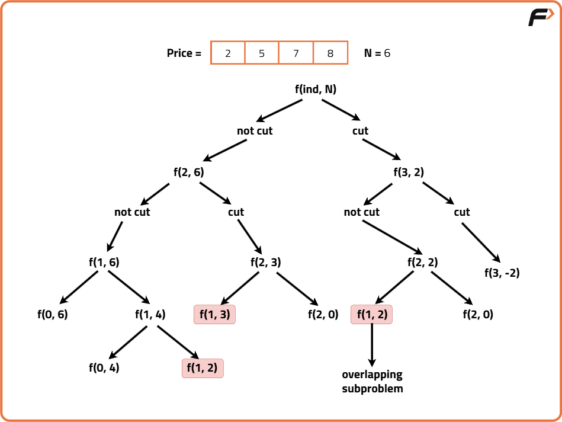
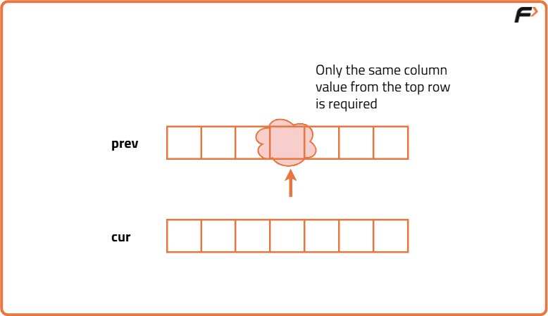

Rod Cutting Problem | (DP - 24)
Problem Statement: Given a rod of length N inches and an array price[] where price[i] denotes the value of a piece of rod of length i inches (1-based indexing). Determine the maximum value obtainable by cutting up the rod and selling the pieces. Make any number of cuts, or none at all, and sell the resulting pieces.
Examples
Input : price = [1, 6, 8, 9, 10, 19, 7, 20], N = 8 Output :25 Explanation :Cut the rod into lengths of 2 and 6 for a total price of 6 + 19= 25.
Input :price = [1, 5, 8, 9], N = 4 Output :10 Explanation :Cut the rod into lengths of 2 and 2 for a total price of 5 + 5 = 10.
Disclaimer: Here is the practice link to help you assess your knowledge better. It's highly recommend trying to solve it before looking at the solution.
Memoization Approach
Algorithm
Why a Greedy Solution doesn’t work?
The first approach that comes to our mind is greedy. A greedy solution will fail in this problem because there is no ‘uniformity’ in data. While selecting a local better choice we may choose an item that will in the long term give less value.As the greedy approach doesn’t work, we will try to generate all possible combinations using recursion and select the combination which gives us the maximum value in the given constraints.
Steps to form the recursive solution:
We will first form the recursive solution by the three points mentioned in Dynamic Programming Introduction.
Express the problem in terms of indexes:
- We are given ‘n’ items. Their weight is represented by the ‘wt’ array and value by the ‘val’ array. So clearly one parameter will be ‘ind’, i.e., the index up to which the array items are being considered.
- There is one more parameter “W”. We need the capacity of the knapsack to decide whether we can pick an array item or not in the knapsack.
- So, we can say that initially, we need to find f(n-1, W) where W is the overall capacity given to us. f(n-1, W) means we are finding the maximum value of items that the thief can steal from items with index 0 to n-1 with capacity W of the knapsack.
Base Cases:
- If ind == 0, it means we are at the first item. Now, in an unbounded knapsack we can pick an item any number of times we want. As there is only one item left, we will pick for W/wt[0] times because we ultimately want to maximize the value of items while respecting the constraint of weight of the knapsack. The value added will be the product of the number of items picked and value of the individual item. Therefore we return (W/wt[0]) * val[0].
Try out all possible choices at a given index:
- We need to generate all the subsequences. We will use the pick/non-pick technique as discussed in this video Recursion on Subsequences.
- We have two choices:
- Exclude the current element in the subsequence: We first try to find a subsequence without considering the current index item. If we exclude the current item, the capacity of the bag will not be affected and the value added will be 0 for the current item. So we will call the recursive function f(ind-1, W).
- Include the current element in the subsequence: We will try to find a subsequence by considering the current item to the knapsack. As we have included the item, the capacity of the knapsack will be updated to W-wt[ind] and the current item’s value (val[ind]) will also be added to the further recursive call answer.
- Since there is an unlimited supply of items, we will not recursively call for f(ind-1, W-wt[ind]). Instead, we stay at the same index and call f(ind, W-wt[ind]).
- Note: We consider the current item only if its weight is less than or equal to the capacity W of the knapsack.
Return the maximum of take and notTake:
- Since we need to maximize the value, the final result will be max(take, notTake).
Steps to memoize a recursive solution:
- If we draw the recursion tree, we will see that there are overlapping subproblems. To convert a recursive solution to memoization:
- Create a dp array of size [n][W+1]. The size of the input array is ‘n’, so the index will always lie between ‘0’ and ‘n-1’. The capacity can take any value between ‘0’ and ‘W’. Therefore we take the dp array as dp[n][W+1].
- Initialize the dp array to -1.
- Whenever we want to find the answer of particular parameters (say f(ind, target)), we first check whether the answer is already calculated (dp[ind][target] != -1). If yes, simply return the value from the dp array.
- If not, then we are finding the answer for the given parameters for the first time. We compute it using the recursive relation, and before returning, we store it in dp[ind][target].

Code
#include <bits/stdc++.h>
using namespace std;
class Solution {
public:
// Function to compute maximum price obtainable by cutting the rod
int rodCutting(vector<int> price, int n) {
// Initialize a DP table where dp[i][j] stores the max price
// using first i rod lengths to make total rod length j
vector<vector<int>> dp(n, vector<int>(n + 1, 0));
// Fill the base case: only using the first rod length (length = 1)
for(int length = 0; length <= n; length++) {
// We can use rod of length 1 (index 0) multiple times
dp[0][length] = length * price[0];
}
// Iterate through each rod piece starting from index 1
for(int i = 1; i < n; i++) {
for(int length = 0; length <= n; length++) {
// Option 1: Do not cut with this rod (copy from above)
int notTake = dp[i - 1][length];
// Option 2: Cut with current rod length (reuse allowed)
int take = INT_MIN;
int rodLength = i + 1;
// Check if this rod fits in current length
if(rodLength <= length) {
take = price[i] + dp[i][length - rodLength];
}
// Store the best value in the DP table
dp[i][length] = max(take, notTake);
}
}
// Return the answer from the last row and column (full rod length)
return dp[n - 1][n];
}
};
// Driver code
int main() {
// Length of the rod
int n = 8;
// Price list where price[i] is the value of rod of length i+1
vector<int> price = {1, 5, 8, 9, 10, 17, 17, 20};
// Create object of Solution class
Solution obj;
// Call rodCutting function and print the result
int maxValue = obj.rodCutting(price, n);
cout << "The maximum obtainable value is: " << maxValue << endl;
return 0;
}
Complexity Analysis
Time Complexity: O(n × n) Each subproblem (i, length) is computed once.
Space Complexity: O(n × n),We use a 2D DP table for memoization.
Tabulation Approach
Algorithm
First, we need to initialize the base conditions of the recursive solution.
- At ind==0, we are considering the first element, so we will assign its value as (i/wt[0]) * val[0], where i will iterate from 0 to W.
- Next, we are done for the first row, so our ‘ind’ variable will move from 1 to n-1, whereas our ‘cap’ variable will move from 0 to ‘W’. We will set the nested loops to traverse the dp array.
- Inside the nested loops we will apply the recursive logic to find the answer of the cell.
- When the nested loop execution has ended, we will return dp[n-1][W] as our answer.
Code
#include <bits/stdc++.h>
using namespace std;
class Solution {
public:
// Function to solve the rod cutting problem
int rodCutting(vector<int>& price, int n) {
// Initialize DP table with dimensions [n][n + 1]
vector<vector<int>> dp(n, vector<int>(n + 1, 0));
for(int length = 0; length <= n; length++){
dp[0][length] = price[0]*length;
}
// Fill the DP table
for (int ind = 1; ind < n; ++ind) {
for (int length = 1; length <= n; ++length) {
// Case when the piece is not taken
int notTaken = 0+dp[ind - 1][length];
// Case when the piece is taken
int taken = INT_MIN;
/* Length of the rod piece
corresponding to the current index*/
int rodLength = ind + 1;
// Check if the piece can be taken
if (rodLength <= length) {
taken = price[ind] + dp[ind][length - rodLength];
}
/* Update dp[ind][length] with the maximum of
including or not including the current piece*/
dp[ind][length] = max(notTaken, taken);
}
}
// Return the result
return dp[n - 1][n];
}
};
int main() {
vector<int> price = {2, 4, 6, 8};
int n = price.size();
// Create an instance of Solution class
Solution sol;
// Print the result
cout << "The Maximum value is " << sol.rodCutting(price, n) << endl;
return 0;
}
Complexity Analysis
Time Complexity: O(N * W),Because we have a nested loop iterating through all `n` items and all `W` capacities.
Space Complexity: O(N * W),We are using a 2D DP table of size `n` by `W+1` to store intermediate results, and we eliminated recursion stack space.
Space Optimization Approach
Algorithm
dp[ind][cap] = max(dp[ind-1][cap] ,dp[ind][cap-wt[ind]]
We see that to calculate a value of a cell of the dp array, we need only the previous row values (say prev). So, we don’t need to store an entire array. Hence we can space optimize it.
We will be space optimizing this solution using only one row. If we clearly see the values required: dp[ind-1][cap] and dp[ind-1][cap - wt[ind]], we can say that if we are at a column cap, we will only require the values shown in the blue box(of the same column) from the previous row and other values will be from the cur row itself. So why do we need to store an entire array for it?
If we need only one value from the prev row, there is no need to store an entire row. We can work a bit smarter. We can use the cur row itself to store the required value in the following way:
- We somehow make sure that the previous value( say preValue) is available to us in some manner ( we will discuss later how we got the value).
- Now, let us say that we want to find the value of cell cur[3], by going through the relation we find that we need a preValue and one value from the cur row.
- We see that to calculate the cur[3] element, we need only a single variable (preValue). The catch is that we can initially place this preValue at the position cur[3] (before finding its updated value) and later while calculating for the current row’s cell cur[3], the value present there automatically serves as the preValue and we can use it to find the required cur[3] value. ( If there is any confusion please see the code).
- After calculating the cur[3] value we store it at the cur[3] position so this cur[3] will automatically serve as preValue for the next row. In this way, we space-optimize the tabulation approach by just using one row.

Code
#include <bits/stdc++.h>
using namespace std;
class Solution {
public:
// Function to solve the rod cutting problem
int rodCutting(vector<int>& price, int n) {
// Initialize DP table with dimensions [n + 1]
vector<int> prev(n+1, 0), cur(n+1, 0);
for(int length = 0; length <= n; length++){
prev[length] = price[0]*length;
}
// Fill the DP table
for (int ind = 1; ind < n; ++ind) {
for (int length = 1; length <= n; ++length) {
// Case when the piece is not taken
int notTaken = 0+prev[length];
// Case when the piece is taken
int taken = INT_MIN;
/* Length of the rod piece
corresponding to the current index*/
int rodLength = ind + 1;
// Check if the piece can be taken
if (rodLength <= length) {
taken = price[ind] + cur[length - rodLength];
}
/* Update cur[length] with the maximum of
including or not including the current piece*/
cur[length] = max(notTaken, taken);
}
prev = cur;
}
// Return the result
return prev[n];
}
};
int main() {
vector<int> price = {2, 4, 6, 8};
int n = price.size();
// Create an instance of Solution class
Solution sol;
// Print the result
cout << "The Maximum value is " << sol.rodCutting(price, n) << endl;
return 0;
}Complexity Analysis
Time Complexity: O(N * W), We iterate through N items, and for each item we process W weight capacities.
Space Complexity: O(W),We only use a 1D array of size W to store intermediate results, eliminating the need for 2D DP or recursion stack.